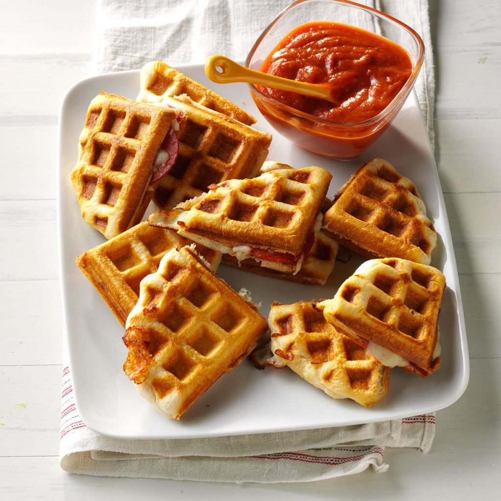

Waffle-Iron Pizzas
Ingredients
1 package (16.3 ounces) large refrigerated buttermilk biscuits
1 cup shredded part-skim mozzarella cheese
24 slices turkey pepperoni (about 1-1/2 ounces)
2 ready-to-serve fully cooked bacon strips, chopped
Pizza sauce, warmed
Directions
- Roll or press biscuits into 6-in. circles. On 1 biscuit, place 1/4 cup cheese, 6 slices pepperoni and a scant tablespoon chopped bacon to within 1/2 in. of edges. Top with a second biscuit, folding bottom edge over top edge and pressing to seal completely.
- Bake in a preheated waffle iron according to manufacturer's directions until golden brown, 4-5 minutes. Repeat with remaining ingredients. Serve with pizza sauce.
Nutrition Facts
1 pizza: 461 calories, 21g fat (8g saturated fat), 28mg cholesterol, 1650mg sodium, 50g carbohydrate (5g sugars, 2g fiber), 19g protein.
Total Time
Prep/Total Time: 30 min.